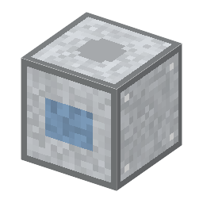

ロードポート
Load Port・ブロック・Semiconductor
仮（まだ本物どおりでない所がある）

説明
①子ども 工程の機械の隣に置く台。FOUP からウェハーを機械に入れ、できたウェハーを別の FOUP に戻す。
②学生 電気 50W、1秒ごと。工程の機械の隣に置き、上に「入れる FOUP」、下に「出す FOUP」。機械の入口が受け付けるウェハーを1回分ずつ入れ、出口のウェハーを出す FOUP へ（同じ種類・25枚まで）。次の機械へは、出す FOUP を持って行って、そこのロードポートの入れる口に。
③大人 本物は装置の前にロボット（EFEM）がいて、FOUP のふたを開け、1枚ずつ取り出して装置に入れる。人はウェハーに触らない。
④ガチ レッドストーンは使わない。電気で動く。
作り方
使い道
（このアイテムを使うレシピは無い）